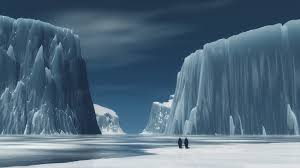
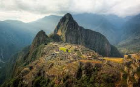
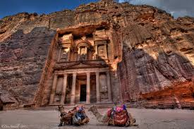
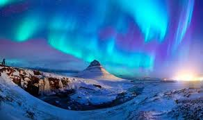

By Lee Lemur
March 2, 2017
If you are fond of travelling, as I am, you may want to visit some of these stunning locations in the world. Being able to experience the beauty of in the planet I live in, is one of the greatest pleasures I have as a human being.
Antarctica is the Earth's southern most continent. The temperature in Antarctica has reached −89.2 °C (−128.6 °F), though the average for the third quarter (the coldest part of the year) is −63 °C (−81 °F). Those are some cold temperatures...brrr, can I even survive?! Why should you still visit? If observing penguins, orcas, seals and blue whales interests you. If kayaking and taking a plunge in the freezing waters is something you find thrilling. All you see is ice and water as you look around: icy mountains, cliffs, plains and icebergs!
The ruins at Machu Picchu are one of the most memorable sights to behold on a trip to Peru. The ruins are from the lost days of the Incas. Watching the sun rise over the ruins is an unbelievable sight.
You can trek to the ruins from the city of 1Cuzco - a guided trek takes about 4 days and you hike through some of the best vistas the Andes has to offer.
Petra is an ancient city in the country of Jordan.
Besides being a famous archaeological site, Petra is unique in it's stunning coral appearance due to its rock cut architecture.
Why should you visit Iceland? It's becoming a popular travel destination because of cheaper flights, but Iceland has always been an adventurer's haven. Glacier trekking, fjords, volcanoes, the continental divide and the northern lights - Iceland has no dearth of natural beauty.
